B.Tech
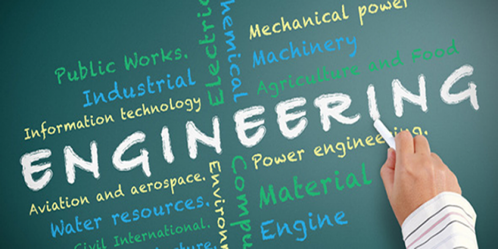
Bachelor of Technology (BTech) is a professional undergraduate engineering degree programme awarded to candidates after they complete four years of study in the field. Engineering is one of the most popular courses in India and there are many institutes that offer the course to aspiring students. Lakhs of students enroll every year in this prestigious and most popular course, BTech is one of the most sought after courses in India. India produces more than 10 lakh engineering graduates every year and the engineering education in India comprises around 2500 engineering colleges and 1300 polytechnic colleges.
The most common BTech entrance examinations are JEE Main and JEE Advanced. Along with these national level entrance examinations, there are many state and private level entrance examinations that the students can attempt for admission to the course. The basic eligibility criteria for BTech is class 12 with Physics, Chemistry and Mathematics. However, there are additional criteria in every entrance exam and institute. Some of the institutes also conduct admission to their courses on merit basis i.e. based on marks scored by candidates in their class 12 board exams.
about B.Tech
BTech stands for Bachelor of Technology. It is an undergraduate four-year course and is offered in various disciplines and specialisations. The admissions to BTech is done on the basis of various national-level and state-level entrance exams and candidates are given admission on the basis of scores and merit list.
BTech degrees offer students an opportunity to pursue a career in Engineering. The courses are of a duration of 4-years and are spread across 8 semesters. There are typically two kinds of engineering programme:
- 3-year Lateral-Entry BTech after Diploma in Engineering
- 4-year BTech after Class 12
Eligibility criteria for B.Tech
The basic eligibility requirement for admissions to any BTech programme is
- Candidates must have passed the class 12 exam from a recognised board with Physics, Chemistry and Mathematics as core subjects.
- They must also have secured minimum aggregate marks of 60% in the above subjects combined.
- Most admissions are done based on the student's performance in the entrance examination.
- The regular mode of entry to BTech course is through entrance examination after Class 12th. The other mode is called as Lateral-Entry mode, wherein candidates can enrol in BTech programme in second year.
- Those who possess three-year diploma programme in engineering can enrol in BTech under Lateral-Entry Scheme.
- Please note that the BTech eligibility criteria would vary from institute to institute
List of B.Tech courses:
 1. Mechanical Engineering
1. Mechanical Engineering
- Mechanical engineering is the study of physical machines that may involve force and movement. It is an engineering branch that combines engineering physics and mathematics principles with materials science, to design, analyze, manufacture, and maintain mechanical systems.
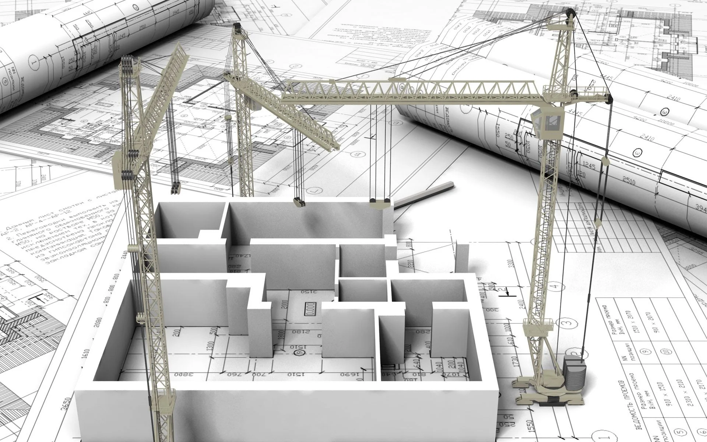
2. Civil Engineering
- Civil engineering is a professional engineering discipline that deals with the design, construction, and maintenance of the physical and naturally built environment, including public works such as roads, bridges, canals, dams, airports, sewage systems, pipelines, structural components of buildings, and railways.
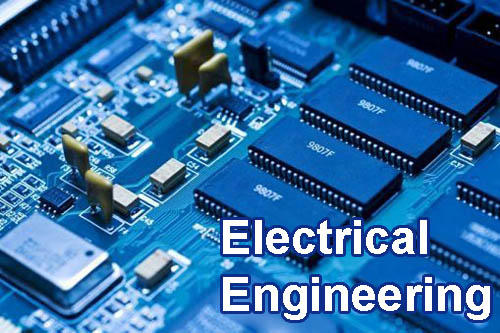
3. Electrical engineering
- Electrical engineering is an engineering discipline concerned with the study, design, and application of equipment, devices, and systems which use electricity, electronics, and electromagnetism
4. Electronics and Communication Engineering
- Electronic engineering is a sub-discipline of electrical engineering which emerged in the early 20th century and is distinguished by the additional use of active components such as semiconductor devices to amplify and control electric current flow.
5. Chemical Engineering
- Chemical engineering is an engineering field which deals with the study of operation and design of chemical plants as well as methods of improving production. Chemical engineers develop economical commercial processes to convert raw materials into useful products.
 6. Aerospace engineering
6. Aerospace engineering
- Aerospace engineering is the primary field of engineering concerned with the development of aircraft and spacecraft. It has two major and overlapping branches: aeronautical engineering and astronautical engineering. Avionics engineering is similar, but deals with the electronics side of aerospace engineering.
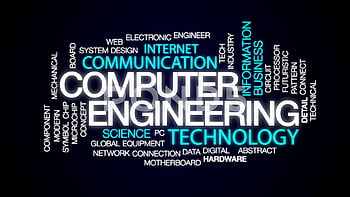
7. Computer Engineering
- Computer engineering is a branch of electrical engineering and computer science that integrates several fields of computer science and electronic engineering required to develop computer hardware and software
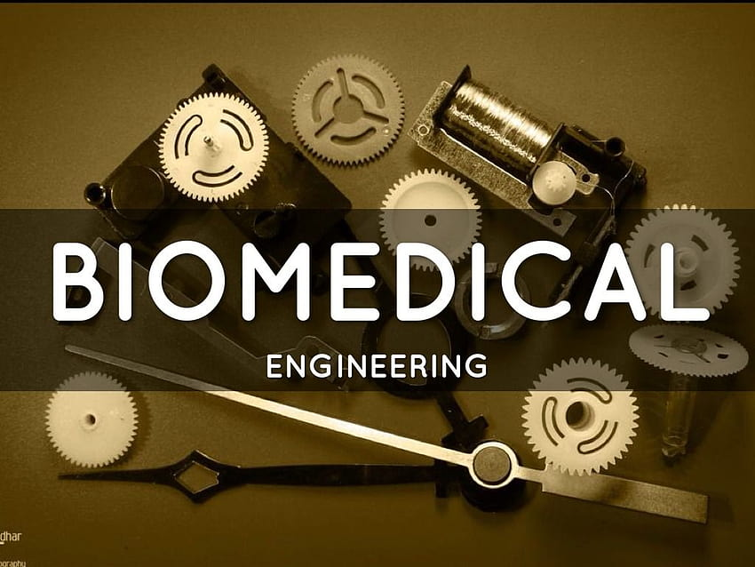
8. Biomedical engineering
- Biomedical engineering or medical engineering is the application of engineering principles and design concepts to medicine and biology for healthcare purposes. BME is also traditionally logical sciences to advance health care treatment, including diagnosis, monitoring, and therapy.
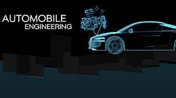
9. Automobile Engineering
- Automotive engineering, along with aerospace engineering and naval architecture, is a branch of vehicle engineering, incorporating elements of mechanical, electrical, electronic, software, and safety engineering as applied to the design, manufacture and operation of motorcycles, automobiles, and trucks and their respective engineering subsystems. It also includes modification of vehicles. Manufacturing domain deals with the creation and assembling the whole parts of automobiles is also included in it. The automotive engineering field is research intensive and involves direct application of mathematical models and formulas. The study of automotive engineering is to design, develop, fabricate, and test vehicles or vehicle components from the concept stage to production stage. Production, development, and manufacturing are the three major functions in this field.
10. Computer Science and Engineering
- Computer Science and Engineering is an academic program at many universities which comprises scientific and engineering aspects of computing. CSE is also a term often used in Europe to translate the name of engineering informatics academic programs.
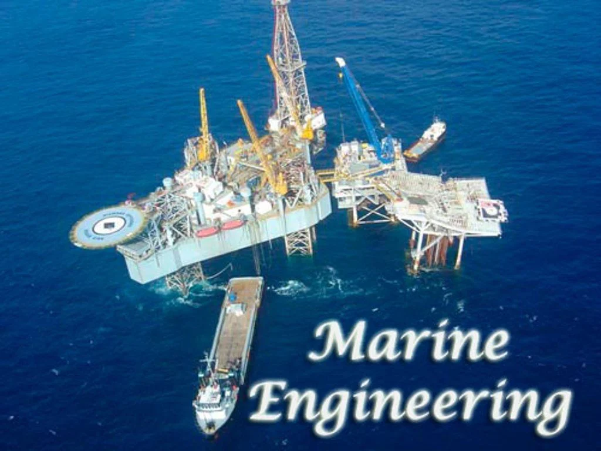
11. Marine engineering
- Marine engineering is the engineering of boats, ships, submarines, and any other marine vessel. Here it is also taken to include the engineering of other ocean systems and structures – referred to in certain academic and professional circles as “ocean engineering.”
12. Environmental engineering
- Environmental engineering is a professional engineering discipline related to environmental science.
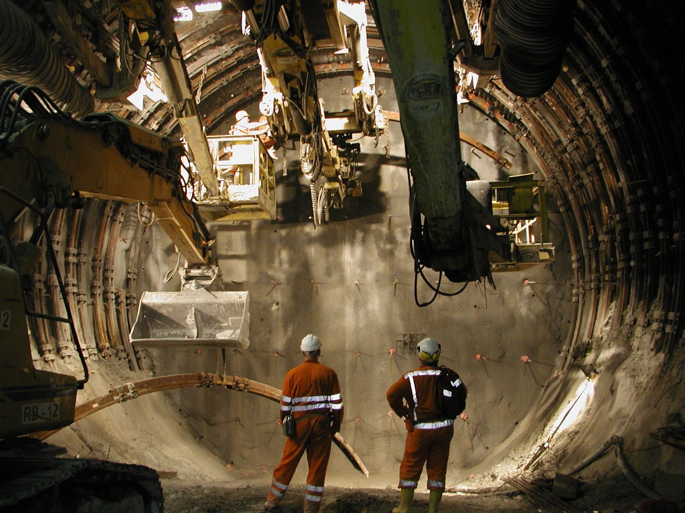
13. Mining engineering
- Mining in the engineering discipline is the extraction of minerals from underneath, open pit, above or on the ground. Mining engineering is associated with many other disciplines, such as mineral processing, exploration, excavation, geology, and metallurgy, geotechnical engineering and surveying
14. Petroleum Engineering
- Petroleum engineering is a field of engineering concerned with the activities related to the production of Hydrocarbons, which can be either crude oil or natural gas. Exploration and production are deemed to fall within the upstream sector of the oil and gas industry.
 15. Information technology
15. Information technology
- Information technology is the use of computers to create, process, store, retrieve and exchange all kinds of data and information. IT forms part of information and communications technology
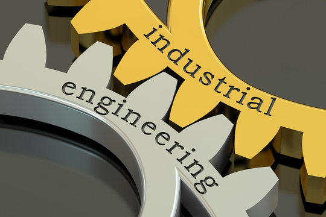
16. Industrial engineering
- Industrial engineering is an engineering profession that is concerned with the optimization of complex processes, systems, or organizations by developing, improving and implementing integrated systems of people, money, knowledge, information and equipment. Industrial engineering is central to manufacturing operations
 17. Robotics
17. Robotics
- Robotics is an interdisciplinary branch of Electronics & Communication, computer science and engineering. Robotics involves the design, construction, operation, and use of robots. The goal of robotics is to design machines that can help and assist humans.
18. Software engineering
- Software engineering is an engineering-based approach to software development. A software engineer is a person who applies the engineering design process to design, develop, maintain, test, and evaluate computer software
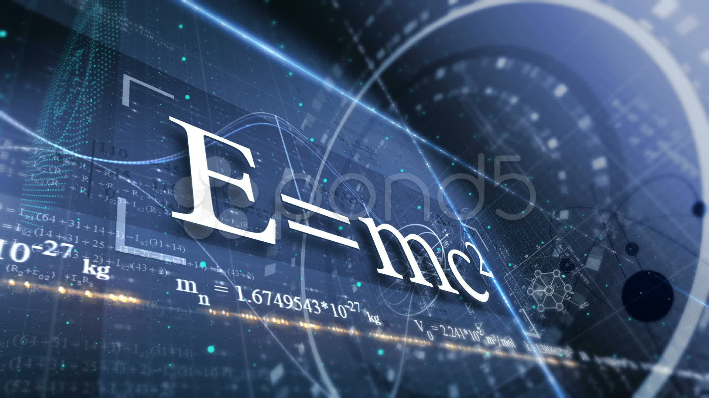
19. Engineering physics
- Engineering physics, or engineering science, refers to the study of the combined disciplines of physics, mathematics, chemistry, biology, and engineering, particularly computer, nuclear, electrical, electronic, aerospace, materials or mechanical engineering.
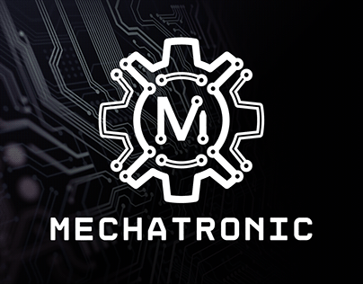
20. Mechatronics
- Mechatronics engineering also called mechatronics, is an interdisciplinary branch of engineering that focuses on the integration of mechanical, electrical and electronic engineering systems, and also includes a combination of robotics, electronics, computer science, telecommunications, systems, control, and product engineering.
BTech Career, Scope and Job Profiles
BTech is one of the most popular courses amongst students after completing Class 12th. It is evident by the fact that millions of students appear for JEE and other top engineering entrance exams every year. It offers wide range of opportunities, thus increasing its popularity amongst students. Graduates are hired across various domains such as KPO/Research Analytics, Accounting/Finance. Some other domains include:
- IT Software/Software Services: These companies hire Computer Science Graduates and software developers. Hirings are made for departments such as App Development, Software Testing, Software Research, Data Administrator etc.
- Strategy/Management Consulting Firms: Many Management Consulting Firms such as the Big 4 hire Engineering graduates for business processes, database management and website management. Graduates with strong hold on their domain also work as consultants and experts in the companies.
- Education/Teaching/Training: After BTech, candidates also opt for higher studies and enter into the field of academia or industrial training. By pursuing MTech and PhD, candidates can upgrade their skills and seek better career opportunities through teaching recruitments. More than a lakh students opt for higher degrees from international institutions in the field of engineering.
- Internet/E-Commerce: Top Companies such as Amazon, Flipkart, Swiggy, Zomato which are E-commerce giants hire skilled engineering graduates for app development, algorithm testing, customer service etc.